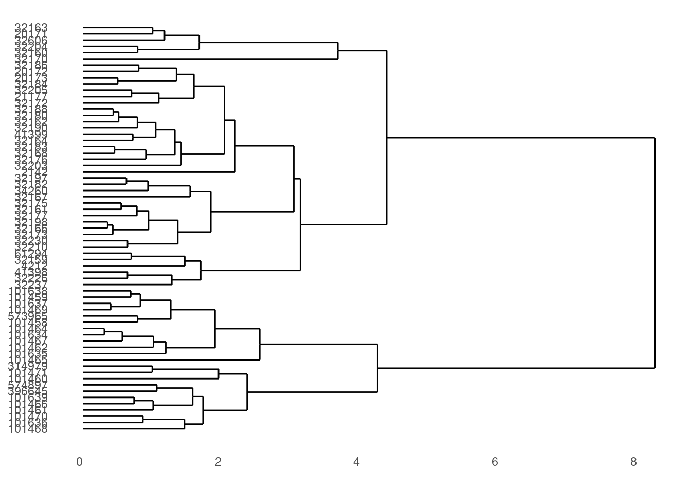
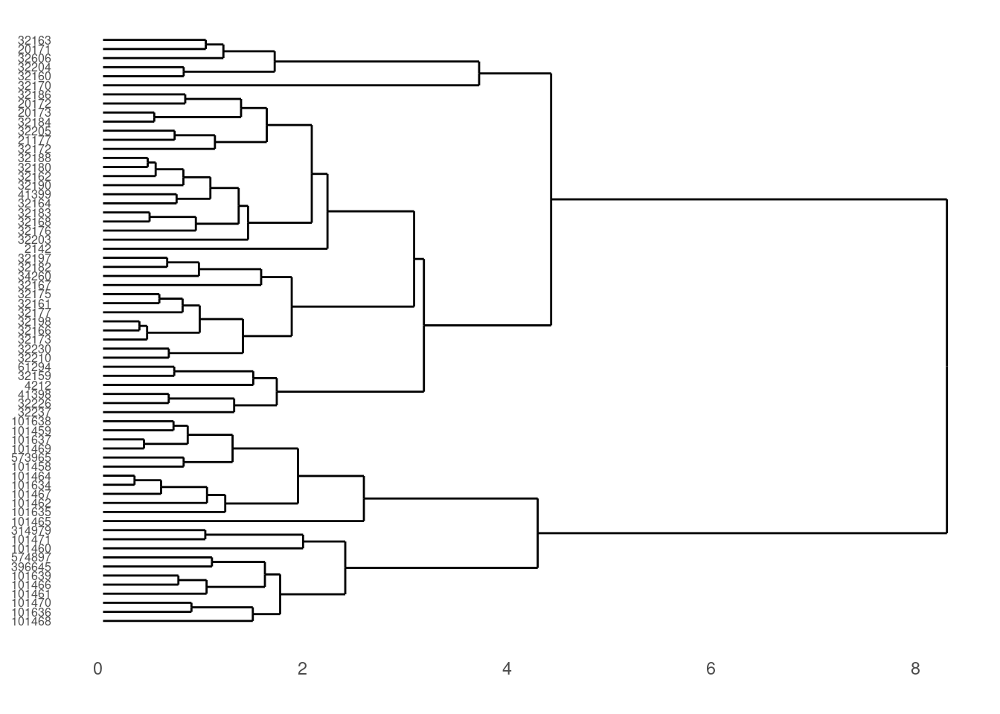
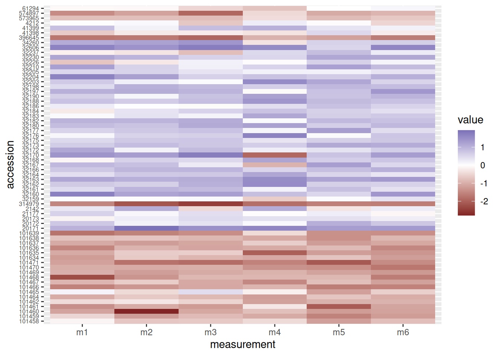
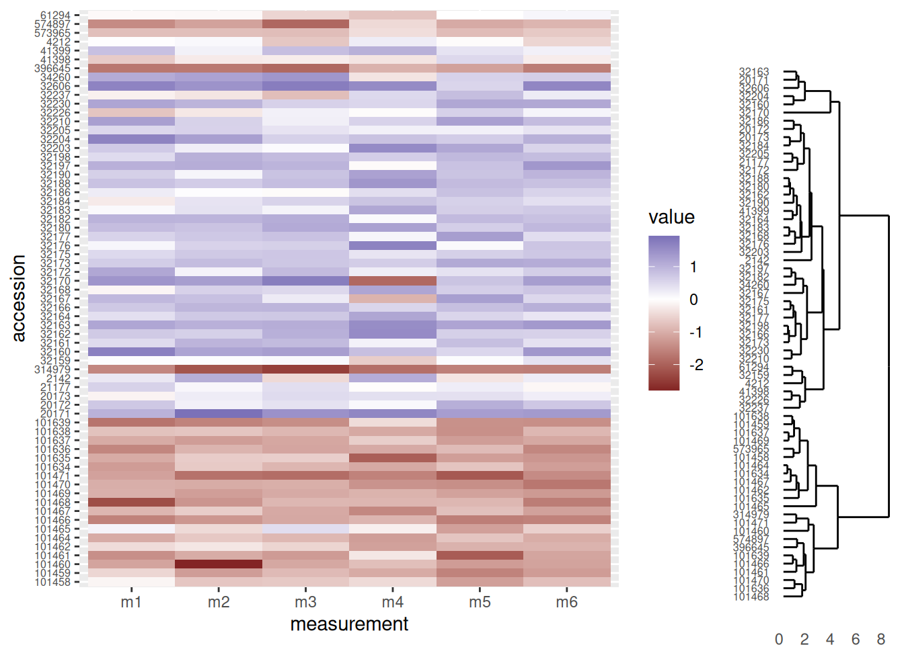
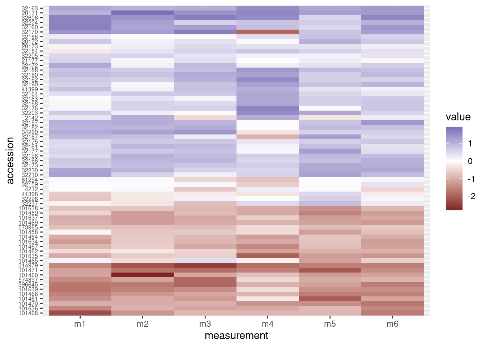
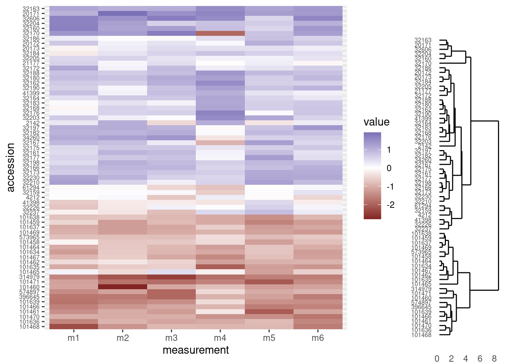
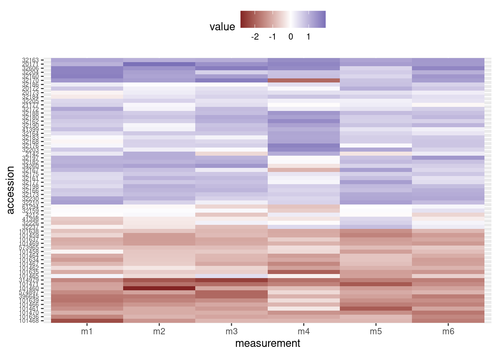
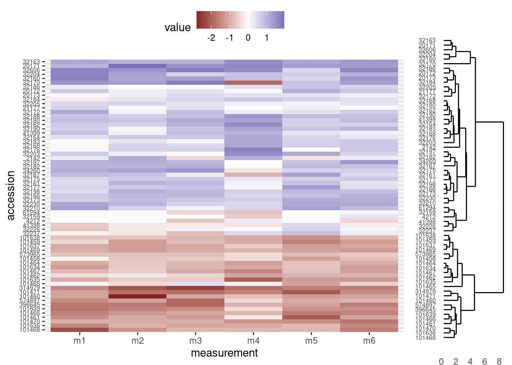
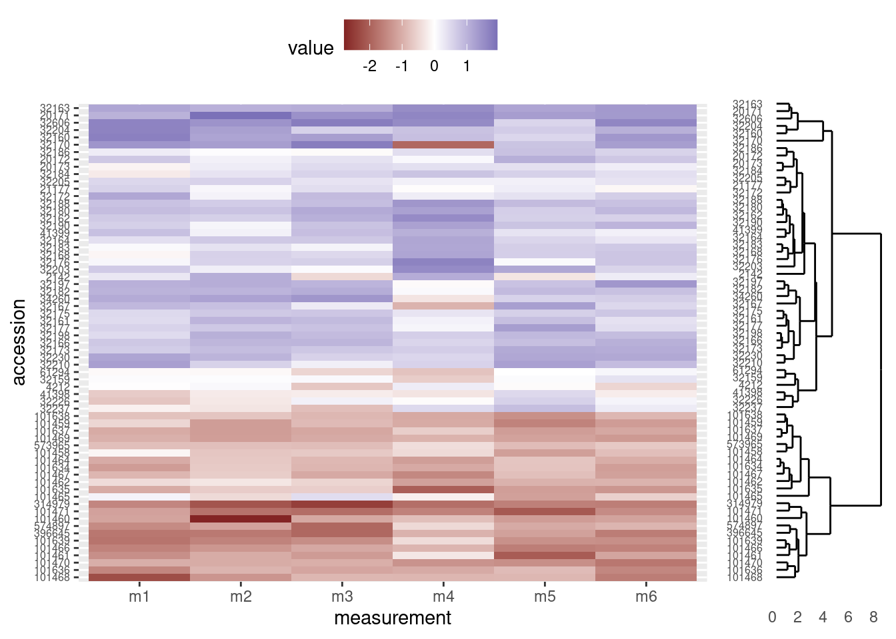
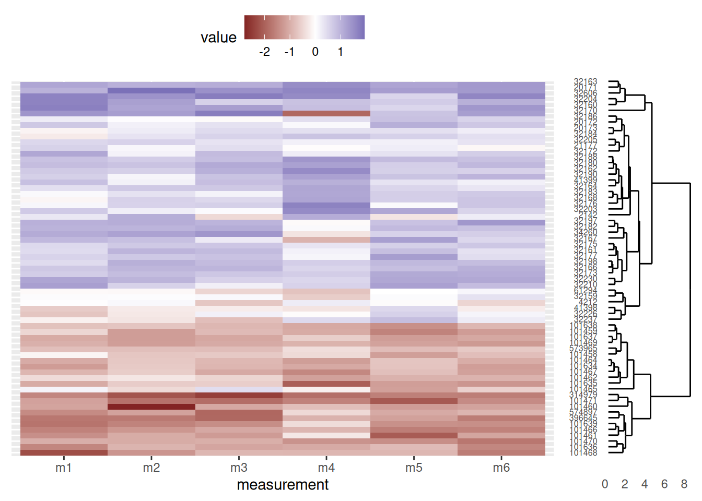

dir.create("data")
dir.create("output")Clusters and Heatmaps
Want to combine the visualization of quantitative data with clustering algorithms? Unsatisfied with the options provided by the base R packages? In this hands-on workshop, we’ll use the ggendro package for R to make publication-quality graphics.
Learning objectives
- Run clustering analysis and display dedrogram
- Visualize data in a heatmap
- Use
gridpackage to create multi-plot figures
Getting started
First we need to setup our development environment. Open RStudio and create a new project via:
- File > New Project…
- Select ‘New Directory’
- For the Project Type select ‘New Project’
- For Directory name, call it something like “r-graphing” (without the quotes)
- For the subdirectory, select somewhere you will remember (like “My Documents” or “Desktop”)
We need to create two folders: ‘data’ will store the data we will be analyzing, and ‘output’ will store the results of our analyses. In the RStudio console:
We will also need a few R packages that are not included in the standard distribution of R. Those packages are ggplot2, ggdendro, tidyr, and grid and can be installed with the install.packages() function. Note these packages need only be installed once on your machine.
install.packages("ggplot2")
install.packages("ggdendro")
install.packages("grid")
install.packages("tidyr")Finally, download data file from https://jcoliver.github.io/learn-r/data/otter-mandible-data.csv or http://tinyurl.com/otter-data-csv (the latter just re-directs to the former). These data are a subset of those used in a study on skull morphology and diet specialization in otters doi: 10.1371/journal.pone.0143236. Save this file in the “data” folder we just created.
Data preparation
For any work that we do, we want to record all the steps we take, so instead of typing commands directly into the R console, we keep all our work in an R script. These scripts are just text files with R commands; by convention, we start the script with a brief bit of information about what the script does.
# Cluster & heatmap on otter data
# Jeff Oliver
# jcoliver@email.arizona.edu
# 2017-08-15
# Load dependencies
library("ggplot2")
library("ggdendro")
library("tidyr")
library("grid")
# Read in data
otter <- read.csv(file = "data/otter-mandible-data.csv",
stringsAsFactors = TRUE)If we look at the first few rows of data, we see the first three columns have information about the specimen from which the measurements were taken, while columns 4-9 have data for six mandible measurements (m1 - m6):
head(otter) species museum accession m1 m2 m3 m4 m5 m6
1 A. cinerea AMNH 101458 15.100 27.790 21.885 13.010 10.500 61.635
2 A. cinerea AMNH 101461 12.740 26.750 20.265 13.255 8.340 59.370
3 A. cinerea AMNH 101466 12.425 25.915 20.735 12.300 9.430 56.270
4 A. cinerea AMNH 101635 13.400 28.030 22.075 10.580 10.455 58.080
5 A. cinerea AMNH 101459 14.400 26.160 21.385 12.100 9.600 58.635
6 A. cinerea AMNH 101462 14.525 29.020 22.305 11.905 11.070 60.655For our purposes, we only want to look at the data for two species, so we subset the data, including only those rows that have either “A. cinerea” or “L. canadensis” in the species column. Note, this does not alter the data in the original file we read into R; it only alters the data object otter currently in R’s memory.
two_species <- c("A. cinerea", "L. canadensis")
otter <- otter[otter$species %in% two_species, ]The last thing we need to do is scale the data variables (columns 4-9) so measurements have a mean value of 0 and a variance of 1.
otter_scaled <- otter
otter_scaled[, c(4:9)] <- scale(otter_scaled[, 4:9])Clustering
To make our figure, we will build the two plots (the cluster diagram and the heatmap) separately, then use the grid framework to put them together. We start by making the dendrogram (or cluster).
# Run clustering
otter_matrix <- as.matrix(otter_scaled[, -c(1:3)])
rownames(otter_matrix) <- otter_scaled$accession
otter_dendro <- as.dendrogram(hclust(d = dist(x = otter_matrix)))
# Create dendro
dendro_plot <- ggdendrogram(data = otter_dendro, rotate = TRUE)
# Preview the plot
print(dendro_plot)
We can make those labels a bit smaller:
dendro_plot <- dendro_plot + theme(axis.text.y = element_text(size = 6))
# Preview the plot
print(dendro_plot)
That’s it for the cluster image (we’ll make a few more changes later on).
Heatmap
We need to start by transforming data to a “long” format, where each row only contains values for one measurement. For example, our data started in this format:
species museum accession m1 m2
1 A. cinerea AMNH 101458 -0.1274976 -0.7008434
2 A. cinerea AMNH 101461 -1.4031387 -1.0374187We want to transform it so there is only a single measurement in each row:
# A tibble: 4 × 5
species museum accession measurement value
<fct> <fct> <fct> <chr> <dbl>
1 A. cinerea AMNH 101458 m1 -0.127
2 A. cinerea AMNH 101458 m2 -0.701
3 A. cinerea AMNH 101461 m1 -1.40
4 A. cinerea AMNH 101461 m2 -1.04 This new data has columns that have information about the specimen (the “species”, “museum”, and “accession” columns), but now has “measurement” and “value” columns. Instead of one column for each mandible measurement, each row only has one measurement in the “value” column, and the measurement type is stored in the “measurement” column.
We use the tidyr package’s pivot_longer function to handle the data transformation:
# Heatmap
# Data wrangling
otter_long <- pivot_longer(data = otter_scaled,
cols = -c(species, museum, accession),
names_to = "measurement",
values_to = "value")Now we can use that new data frame, otter_long to create our heatmap. In the ggplot package, we use the geom_tile layer for creating a heatmap. Given our prior experience with the y-axis labels being large, we will again use theme to make the accession numbers (the y-axis labels) a little smaller:
heatmap_plot <- ggplot(data = otter_long, aes(x = measurement, y = accession)) +
geom_tile(aes(fill = value)) +
scale_fill_gradient2() +
theme(axis.text.y = element_text(size = 6))
# Preview the heatmap
print(heatmap_plot)
Putting it all together
OK. We made a dendrogram. We made a heatmap. Now how to get them into the same figure? The grid package offers a way to combine separate plots.
grid.newpage()
print(heatmap_plot,
vp = viewport(x = 0.4, y = 0.5, width = 0.8, height = 1.0))
print(dendro_plot,
vp = viewport(x = 0.90, y = 0.445, width = 0.2, height = 1.0))
OK, that’s a start, but there are a few things we need to address:
- Notice the tips of the dendrogram are not in the same order as the y-axis of the heatmap. We’ll need to re-order the heatmap to match the structure of the clustering.
- It would be nice to have the dendrogram and heatmap closer together, without a legend separating them.
- The dendrogram should be vertically stretched so each tip lines up with a row in the heatmap plot.
Re-order heatmap rows to match dendrogram
We’ll use the order of the tips in the dendrogram to re-order the rows in our heatmap. The order of those tips are stored in the otter_dendro object, and we can extract it with the order.dendro function:
otter_order <- order.dendrogram(otter_dendro)And now for the fun part. By default, ggplot use the level order of the y-axis labels as the means of ordering the rows in the heatmap. That is, level 1 of the factor is plotted in the top row, level 2 is plotted in the second row, level 3 in the third row and so on. So we can dictate the order in which these rows are plotted by setting the order of the levels in the column we use for the y-axis labels in the heatmap. The data we used for the heatmap was the long-format, otter_long object, and the column we used for the y-axis is accession. Using the order of the dendrogram tips (we stored this above in the otter_order vector), we can re-level the otter_long$accession column to match the order of the tips in the trees.
# Order the levels according to their position in the cluster
otter_long$accession <- factor(x = otter_long$accession,
levels = otter_scaled$accession[otter_order],
ordered = TRUE)At this point, we need to re-create the heatmap, because the underlying data (otter_long) has changed:
# Heatmap
heatmap_plot <- ggplot(data = otter_long, aes(x = measurement, y = accession)) +
geom_tile(aes(fill = value)) +
scale_fill_gradient2() +
theme(axis.text.y = element_text(size = 6))
# Preview the heatmap
print(heatmap_plot)
Now the rows have been re-arranged and we can see right away that the heatmap now does a better job of grouping “red” rows together and “blue” rows together.
The combined figure shows the accession numbers in the heatmap are now in the same order as the acession numbers in the dendrogram:
grid.newpage()
print(heatmap_plot,
vp = viewport(x = 0.4, y = 0.5, width = 0.8, height = 1.0))
print(dendro_plot,
vp = viewport(x = 0.90, y = 0.445, width = 0.2, height = 1.0))
Re-position legend
We would like the legend to be somewere else besides in between the two graphs, so we will move it to the top of the heatmap. We do this with through the theme layer when creating the heatmap, setting the value of legend.position to “top”:
# Heatmap
heatmap_plot <- ggplot(data = otter_long, aes(x = measurement, y = accession)) +
geom_tile(aes(fill = value)) +
scale_fill_gradient2() +
theme(axis.text.y = element_text(size = 6),
legend.position = "top")
# Preview the heatmap
print(heatmap_plot)
The combined figure now has the heatmap and dendrogram closer together:
grid.newpage()
print(heatmap_plot,
vp = viewport(x = 0.4, y = 0.5, width = 0.8, height = 1.0))
print(dendro_plot,
vp = viewport(x = 0.90, y = 0.445, width = 0.2, height = 1.0))
Align dendrogram tips with heatmap rows
Finally, we will need to adjust the height and alignment of dendrogram to ensure the tips line up with the corresponding rows in the heatmap. Unfortunately, because the two figures are actually independent graphics objects, this part involves considerable trial and error. In general, we will need to change two parameters in the viewport function when we call print on dendro_plot:
y: This argument sets the vertical justification. A value of 0.5 centers the graphic in the middle of the viewport to which it is assigned. Values closer to zero move the graphic towards the bottom of the viewport and values closer to one move the graphic towards the top of the viewport. In our case, we will probably want to move the dendrogram down a little bit, so we use a value below 0.5.height: This is the proportion of the viewport’s vertical space the graphic should use. We initially set it to use all the vertical space (height = 1.0), but since the legend now occupies the real estate at the top of the graphic, we will need to make the dendrogram height smaller.
Note: The actual values you use will depend on the graphics device you ultimately use; that is, the values presented here are designed for an html to be viewed on the web, but if you are displaying on the screen or writing to a pdf file, you may need to use different values for y and height (e.g. when calling print on dendro_plot, it may work better on your screen to set y = 0.4 and height = 0.85).
grid.newpage()
print(heatmap_plot,
vp = viewport(x = 0.4, y = 0.5, width = 0.8, height = 1.0))
print(dendro_plot,
vp = viewport(x = 0.90, y = 0.43, width = 0.2, height = 0.92))
And lastly, as a bonus, we can remove the accession numbers from the heatmap, as they are already displayed at the tips of the dendrogram (and we made sure the heatmap rows and dendrogram tips match, above). We do so by setting the relevant theme elements to element_blank() in our call to ggplot:
# Heatmap
heatmap_plot <- ggplot(data = otter_long, aes(x = measurement, y = accession)) +
geom_tile(aes(fill = value)) +
scale_fill_gradient2() +
theme(axis.text.y = element_blank(),
axis.title.y = element_blank(),
axis.ticks.y = element_blank(),
legend.position = "top")
grid.newpage()
print(heatmap_plot,
vp = viewport(x = 0.4, y = 0.5, width = 0.8, height = 1.0))
print(dendro_plot,
vp = viewport(x = 0.90, y = 0.43, width = 0.2, height = 0.92))
Our final script would look like this:
# Cluster & heatmap on otter data
# Jeff Oliver
# jcoliver@email.arizona.edu
# 2017-08-15
################################################################################
# Load dependencies
library("ggplot2")
library("ggdendro")
library("tidyr")
library("grid")
# Read in data
otter <- read.csv(file = "data/otter-mandible-data.csv",
stringsAsFactors = TRUE)
# Restrict the data to only two species, A. cinerea & L. canadensis
two_species <- c("A. cinerea", "L. canadensis")
otter <- otter[otter$species %in% two_species, ]
# Force re-numbering of the rows after subsetting
rownames(otter) <- NULL
# Scale each measurement (independently) to have a mean of 0 and variance of 1
otter_scaled <- otter
otter_scaled[, c(4:9)] <- scale(otter_scaled[, 4:9])
# Run clustering
otter_matrix <- as.matrix(otter_scaled[, -c(1:3)])
rownames(otter_matrix) <- otter_scaled$accession
otter_dendro <- as.dendrogram(hclust(d = dist(x = otter_matrix)))
# Create dendrogram plot
dendro_plot <- ggdendrogram(data = otter_dendro, rotate = TRUE) +
theme(axis.text.y = element_text(size = 6))
# Heatmap
# Data wrangling
otter_long <- pivot_longer(data = otter_scaled,
cols = -c(species, museum, accession),
names_to = "measurement",
values_to = "value")
# Extract the order of the tips in the dendrogram
otter_order <- order.dendrogram(otter_dendro)
# Order the levels according to their position in the cluster
otter_long$accession <- factor(x = otter_long$accession,
levels = otter_scaled$accession[otter_order],
ordered = TRUE)
# Create heatmap plot
heatmap_plot <- ggplot(data = otter_long, aes(x = measurement, y = accession)) +
geom_tile(aes(fill = value)) +
scale_fill_gradient2() +
theme(axis.text.y = element_blank(),
axis.title.y = element_blank(),
axis.ticks.y = element_blank(),
legend.position = "top")
# All together
grid.newpage()
print(heatmap_plot,
vp = viewport(x = 0.4, y = 0.5, width = 0.8, height = 1.0))
print(dendro_plot,
vp = viewport(x = 0.90, y = 0.43, width = 0.2, height = 0.92))Additional resources
- Documentation for the ggdendro package
- An example on StackOverflow
- A pdf version of this lesson